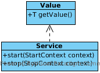

public class TrackerService implements Service<TrackerService> {
...
@Override
public void start(StartContext context) throws StartException {
OUTPUT.start();
}
@Override
public void stop(StopContext context) {
OUTPUT.interrupt();
}
}Service 实现

Service 的两个方法 start() 和 stop() 在实现是不能够有阻塞操作，start() 和 stop() 中不能有以下操作
-
连接或等待网络连接
-
Sleep
-
Wait on a condition
-
Wait on a count down latch
-
等待线程池终止或等待其他 Service
-
等待其他 Service 的状态变化
TrackerService start(), stop() 实现分别为启动和停止 tracker 线程：
TrackerDeploymentService start(), stop() 实现分别为初始化和销毁变量：
public class TrackerDeploymentService implements Service<TrackerDeploymentService> {
...
@Override
public void start(StartContext context) throws StartException {
isShowCool = true;
deployments = Collections.synchronizedSet(new HashSet<String>());
coolDeployments = Collections.synchronizedSet(new HashSet<String>());
}
@Override
public void stop(StopContext context) {
isShowCool = false;
deployments.clear();
coolDeployments.clear();
}
}Service 之间依赖注入
TrackerService 依赖 TrackerDeploymentService，它们之间的依赖注入如下
TrackerService 中添加 InjectedValue 属性
TrackerService 中添加 InjectedValue 属性
private final InjectedValue<TrackerDeploymentService> deploymentService = new InjectedValue<TrackerDeploymentService>();TrackerService 启动时添加依赖说明
context.getServiceTarget()
.addService(name, service)
.addDependency(TrackerDeploymentService.NAME, TrackerDeploymentService.class, service.getDeploymentService())
.setInitialMode(Mode.ACTIVE)
.install();完整关于 TrackerService 启动的代码参照 TypeAddHandler performRuntime() 方法。